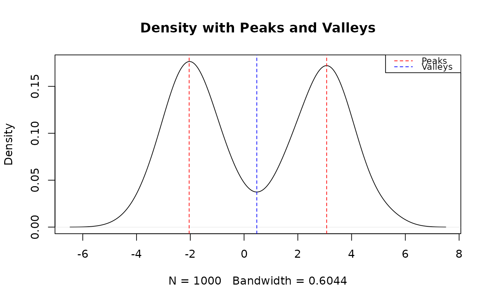
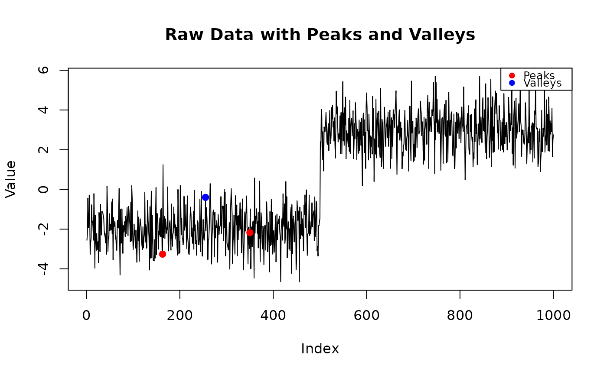
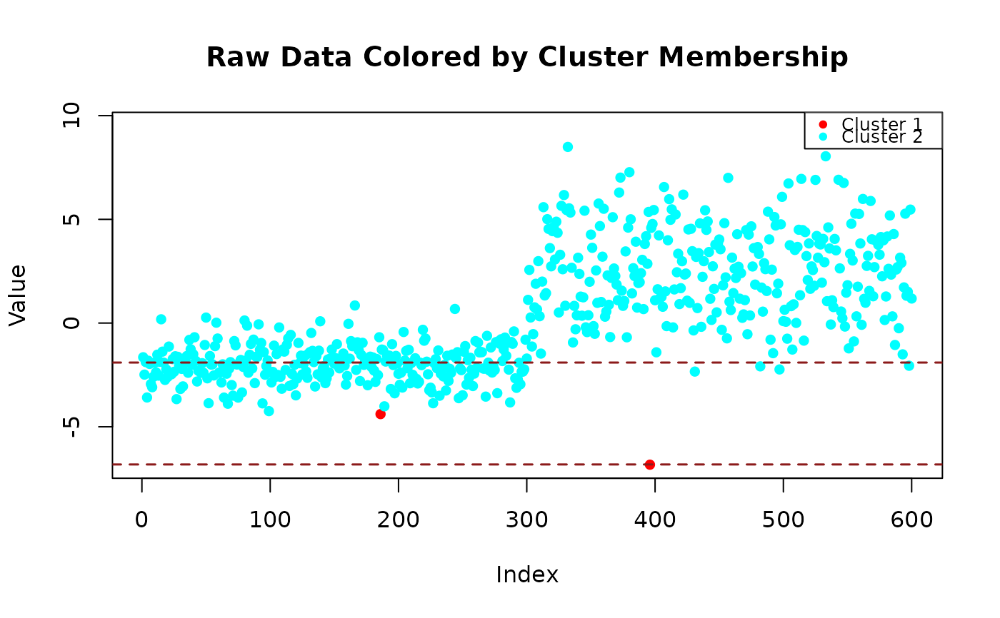

Detect and Classify Modes in a Distribution Using Prominence or Mclust
Source:R/LilHelpers3.R
modal_peaks.RdThis function detects local modes (peaks) in a univariate distribution using kernel density estimation and a prominence threshold. It can optionally apply model-based clustering using `mclust` to estimate the number and characteristics of distributional components.
Usage
modal_peaks(
x,
prominence_threshold = 0.005,
display_type = "density",
adjust = 1,
mclust = FALSE
)Arguments
- x
Numeric vector of observations.
- prominence_threshold
Minimum prominence (height difference to nearest valley) for a peak to be considered significant. Defaults to 0.005.
- display_type
Type of plot to display: `"density"` (default), `"raw"` for colored points, or `"none"` for no plot.
- adjust
numeric. Adjusts the size of the density kernel. Higher values lead to more smoothing.
- mclust
Logical. If `TRUE`, performs model-based clustering using `mclust::Mclust`.
Value
A list with the following elements:
- peak_x
Vector of x-values (locations) of detected peaks.
- peak_y
Vector of y-values (heights) of detected peaks in the kernel density.
- valley_x
Vector of x-values for local minima between peaks (if any).
- valley_y
Vector of y-values for local minima between peaks (if any).
- prominences
Vector of prominence values corresponding to each detected peak.
- mclust
A list of Mclust model results if
mclust = TRUE, including means, SDs, standard errors, cluster sizes, and 95% CI.- classifications
A vector assigning each observation in
xto a cluster. Based on Mclust ifmclust = TRUE, otherwise based on closest peak from prominence method.
Details
Prominence is calculated as the vertical difference between each local maximum and the nearest local minimum (valley).
This helps identify meaningful peaks while filtering out spurious noise-driven ones.
When mclust = TRUE, model-based clustering is performed using Gaussian mixture models (V variance structure),
and the results are returned along with a classification vector.
The classification strategy depends on mclust:
- If TRUE, it returns cluster assignments from mclust::Mclust().
- If FALSE, it classifies each observation by its nearest peak in the kernel density estimate.
Both plots (density and uncertainty) share the same x-axis to support visual comparison.
Examples
set.seed(2)
#' library(mclust)
# Example 1: Noisy Unimodal
x1 <- rnorm(500, mean = 0, sd = 1) + runif(500, -0.5, 0.5)
peaks1_1 = modal_peaks(x1, prominence_threshold = 0.01, mclust = FALSE, display_type = "density")
#> The distribution is unimodal (1 peak detected).

#peaks1_2 = modal_peaks(x1, prominence_threshold = 0.01, mclust = TRUE, display_type = "density")
# Example 2: Noisy Bimodal
x2 <- c(rnorm(300, -2, 0.9), rnorm(300, 2.5, 2.3)) + runif(600, -0.2, 0.2)
peaks2_1 = modal_peaks(x2, prominence_threshold = 0.0001, mclust = FALSE, display_type = "density")
#> The distribution is unimodal (1 peak detected).

peaks2_2 =modal_peaks(x2, prominence_threshold = 0.0001, mclust = FALSE, display_type = "raw")
#> The distribution is unimodal (1 peak detected).

#peaks2_3 =modal_peaks(x2, prominence_threshold = 0.0001, mclust = TRUE, display_type = "raw")